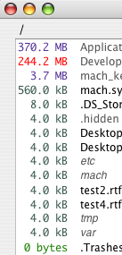

Browsing Files
After you select a drive to sweep, OmniDiskSweeper displays the contents of the selected drive in its own browser window. It may take some time to determine the size of volumes and large folders. Sizes that are still being calculated appear in red. Folders that OmniDiskSweeper hasn't even begun to size will have no size listed, and will be at the end of the list.
All of the files and folders are displayed from largest to smallest so you can quickly find the ones that are taking up the most space. The folders and files are displayed in a column view, similar to a Finder window. You can quickly navigate within folders to get down to the exact folders you want to browse. Simply click on a folder name and its contents are displayed in the column on the right. Continue to select folders until you find the file or folder you are looking for.

Sometimes you may make changes in the Finder that don't show up in OmniDiskSweeper. If you do not see something you are looking for and know that it should be there try selecting the folder you are looking in and then select File ‣ Update.
OmniDiskSweeper only displays files that you have access to from the user account you are logged into. Files in restricted folders are not available and their sizes are not included in the total file sizes you see.